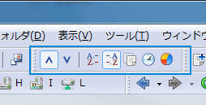

ファイルペインにファイルリストを表示するとき、ソート種別で設定された条件で自動的にソートが行われます。 また、ソートが行われないように設定することもできます。
下記項目をキーにソート可能です。

ファイルペインに表示するオブジェクトリストのソート結果を昇順で表示するか、 降順で表示するかを選択できます。
通常は文字コード（Unicode）順でソートされますが、オブジェクト名に数字列が含まれる場合には、 その部分を数値と判断して数値順にソートするよう設定を変更することも可能です。 詳細は関連項目を参照してください。